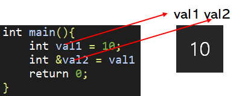

[목차]
#1 참조자(Reference)
#2 참조자 선언 범위
#3 참조자의 참조자
*개인적인 C++ 공부 내용을 정리하는 용도로 작성된 글 이기에 잘못된 내용이 있을 수 있습니다.
#1 참조자(Reference)
공부하기 앞서 다음 문장을 기억 하도록 하자. 그러면 참조자에 대한 이해가 한층 더 수월해질 것이다.
"참조자는 변수의 별칭이다."
변수란 무엇인가? 변수는 메모리 공간에 붙여진 이름이며, 그 이름을 통해서 우리는 해당하는 메모리 공간에 접근한다.
int val1 = 10; 이라는 코드의 동작 과정을 분석해 보자.
① 메모리 공간을 할당하고 ②할당한 메모리 공간에 val1이라는 이름을 붙인 뒤 ③val1을 이용해 메모리 공간에 접근해 10 이라는 상수를 저장한다.
그런데 다음과 같은 의문이 들 수 있다. val1 메모리 공간에 또 다른 이름을 붙일 수는 없을까? 참조자를 이용하면 이것이 가능하다. 참조자는 &연산자를 이용해 아래와 같이 선언한다.
int val1 = 10;
int &val2 = val1; // reference
이제 va1은 또다른 이름인 val2 라는 별칭을 가지게 되었다. 매우 중요하니 다시 한 번 상기시키자. "참조자는 변수의 별칭이다."
#2 참조자 선언 범위
그렇다면 참조자는 어디에나 선언이 가능한 것일까? 물론 그런 것은 아니다. 참조자는 "변수"에 대해서만 선언이 가능하다. 즉 아래와 같은 코드는 성립할 수 없다.
int &val2 = 10; // Error - 참조자가 상수를 선언하고 있음
다음으로 참조자는 무조건 선언과 동시에 변수를 참조해야 한다. 아래처럼 참조자를 미리 선언해 두고, 나중에 변수를 참조하거나, NULL로 초기화 하는것 또한 불가능하다.
int &val1; // Error - 참조자를 선언만 하고 변수를 참조하지 않음.
int &val2 = NULL; // Error - 참조자를 NULL로 초기화함.#3 참조자의 참조자
참조자를 대상으로 참조자를 선언하는 것은 가능하다. 참조자를 "변수"라고 생각해도 상관 없지만, C++은 참조자와 변수를 구분한다. 이미 선언된 변수(val1)를 대상으로 만든 변수(val2)를 "변수"라고 부르지 않고 "참조자"라고 부른다.
int val1 = 10; // val1 = 변수
int &val2 = val1; // val2 = 참조자
int &val3 = val2; // 참조자의 참조자